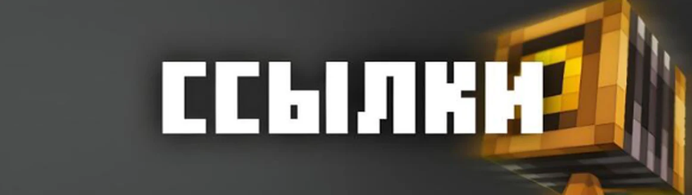

Знания для больших приключений.
Статьи вики о сервере: начните с основной информации, а за остальным загляните в полную википедию.

Статьи вики о сервере: начните с основной информации, а за остальным загляните в полную википедию.
